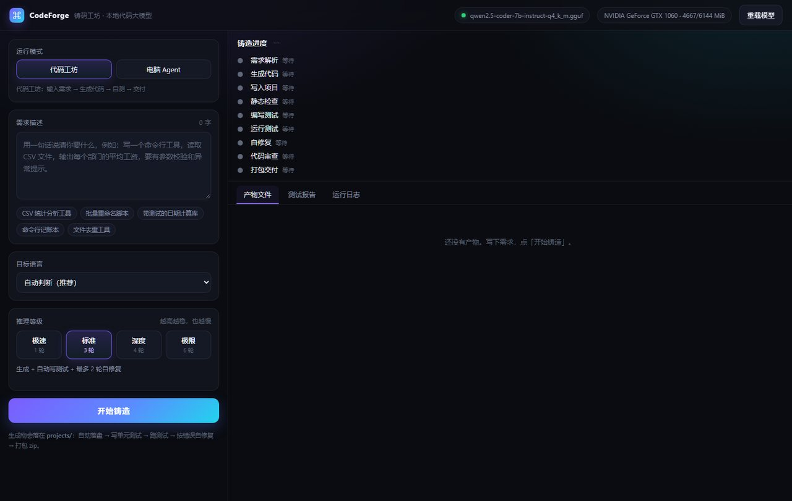
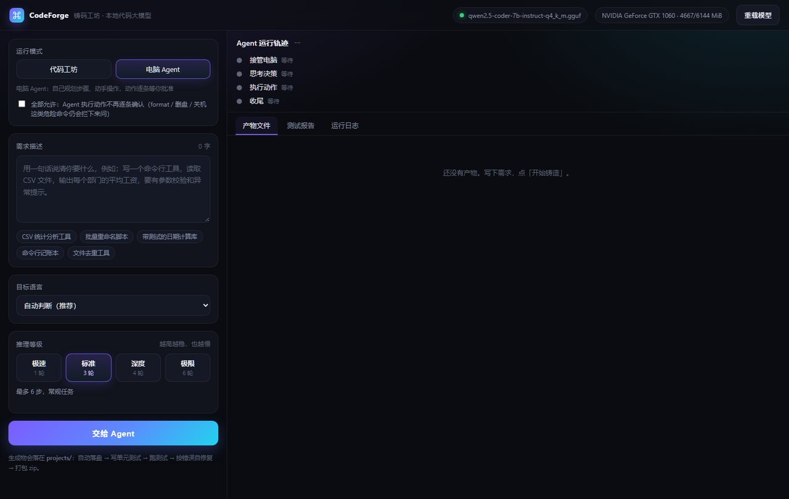
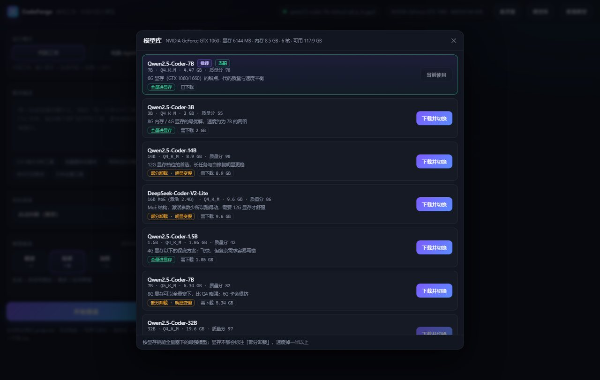
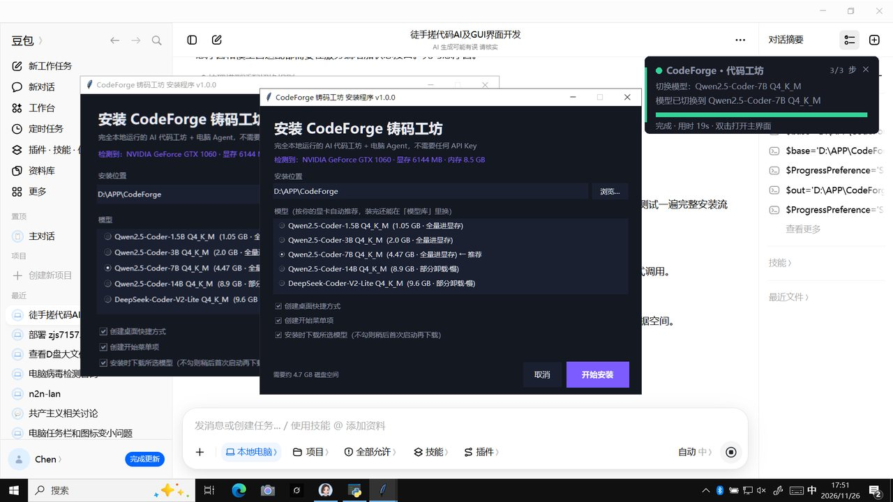

写一句需求，它自己生成代码、写单元测试、跑测试、按报错反复自修复，最后打包成 zip 交付。 切到「电脑 Agent」模式，同一个模型就变成动手干活的助手：执行命令、读写文件、整理目录——每一步都先问你一句。 模型和代码都留在本机，断网也能用。
一条完整管线，从需求走到可运行、带测试、能打包的成品。
模型只输出「文件名 + 代码块」，本地解析成文件树，避免 JSON 转义把模型绕晕；生成后先过静态检查（Python 走 py_compile，Node 走 node --check）。
让模型自己写 unittest 用例并真跑；失败日志回喂模型重写，最多 5 轮。漏 import 这类低级错误走确定性机械修复，不浪费推理。没跑绿会明确标 ⚠，不假装通过。
极速 1 轮不跑测试 / 标准 1 轮带测试 / 深度 2 候选择优 + 审查 / 极限 3 候选 + ≥8 用例 + 边界强化。档位真的改管线，不是装饰。
右上角一张置顶小卡片，实时告诉你「正在处理什么、第几步 / 共几步、进度条、已用时」；等你批准操作时变橙色。双击它打开主界面。
探测显卡显存、内存、磁盘，给 7 个候选模型打分排序：能全量进显存的优先。点一下就下载（ModelScope 直连）并重启引擎、校验模型真的加载成功。
自带向导的 Setup：探硬件 → 推荐模型 → 选目录 → 解包 → 下载 → 建快捷方式 → 写卸载项。装进「设置 → 应用」里能正常卸载，不留垃圾。
深色单页界面，Edge 无边框窗口，右侧实时事件流。

代码工坊：9 阶段时间线 + 等级卡 + 语言选择
电脑 Agent：模式切换、全部允许、右侧 Agent 阶段
模型库：按你的显存推荐，标注「全量进显存 / 部分卸载」
安装向导：自动选中推荐模型，可改目录与选项同一个模型，从「写代码的」变成「替你干活的」。每步都在你的注视下。
模型每轮只吐一个 JSON 动作（thought / action / args），本地执行后把结果回喂，直到它自己 finish。上下文只留最近 8 条，8G 内存也不会被撑爆。
命令原样展示在橙色审批卡上，三个按钮：拒绝 / 允许 / 允许并全部允许。左侧还有「全部允许」勾选框，勾上后本会话不再打扰。
format、diskpart、del /s、reg delete、shutdown、bcdedit 这类命令，即使勾了「全部允许」也必须逐条确认。文件操作锁死在本次任务的专属工作目录。
结束时写 agent_report.json（目标、结论、每步参数与结果）和 README.md，事后能复盘它到底做了什么、在你哪一步拒绝了它。
下表的判定是在一台 GTX 1060 6G / i5-8400 / 8G 内存的机器上实跑出来的。
| 模型 | 体积 | 6G 显存判定 | 说明 |
|---|---|---|---|
| Qwen2.5-Coder-7B Q4_K_M | 4.47 GB | 全量进显存 | 推荐档位，23 tok/s，日常够用 |
| Qwen2.5-Coder-3B Q4_K_M | 2.00 GB | 全量进显存 | 更快更省内存，复杂逻辑会掉质量 |
| Qwen2.5-Coder-14B Q4_K_M | 8.90 GB | 部分卸载·明显变慢 | 质量更好，但会吃内存带宽 |
| DeepSeek-Coder-V2-Lite 16B MoE Q4 | 9.60 GB | 部分卸载·明显变慢 | MoE 激活参数少，长上下文友好 |
| Qwen2.5-Coder-1.5B Q4_K_M | 1.05 GB | 全量进显存 | 只适合小脚本与快速草稿 |
| Qwen2.5-Coder-32B Q4 | 19.6 GB | 显存跑不动 | 需要 24G 级别显卡 |
50.8 MB 安装包，自带引擎与界面；模型装的时候按你的显存自动下载。
推理、测试、打包全在本机。只有首次下载模型需要网络（约 2~5 GB）；模型下好之后断网照常用。代码不会上传到任何地方。
能跑但很慢：可以选 1.5B / 3B 走 CPU，或者把 ngl 调低做部分卸载。6G 显存的 NVIDIA 卡是体验下限，8G 内存要留意别同时开太多程序。
默认逐条审批，命令原文摆在你面前；文件操作被限制在该次任务的专属工作目录；危险命令黑名单即使「全部允许」也要单独确认。无论怎样，跑系统级脚本前请自己看一眼。
不一定。它会给代码配测试并真跑，跑绿了才算交付；跑不绿会在界面明确标 ⚠「测试未全绿」，不会假装通过。7B 模型偶尔会把断言写错，管线会用测试对齐与快照对齐兜底，这类绿色会标成「弱验证」。
设置 → 应用 → 已安装应用里找「CodeForge 铸码工坊」卸载；或直接双击安装目录里的 卸载 CodeForge.bat。会先关进程再删目录，不留残留。